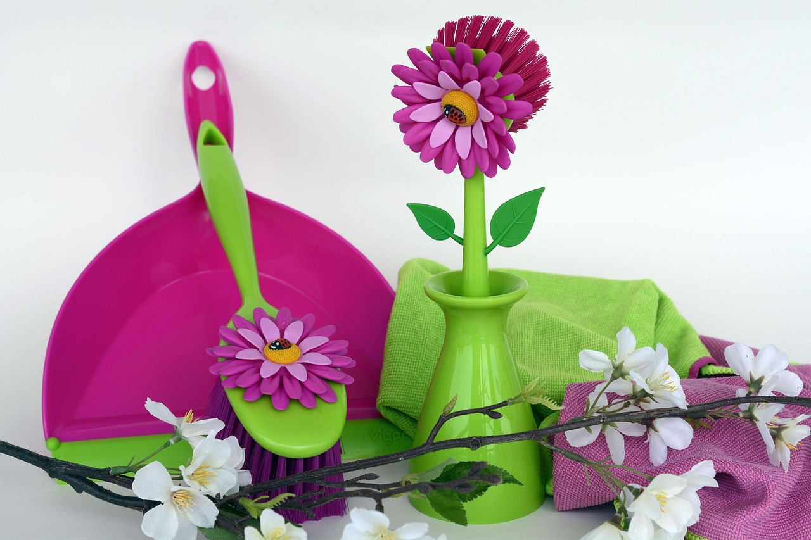

How to Clean and Polish Your Plantarium to Maintain Its Beauty

Photo: anncapictures / Pixabay
Cleaning and polishing your plantarium regularly is crucial for maintaining its beauty and overall health. A plantarium, a sealed container containing plants and a miniature ecosystem, requires specific care to keep it looking pristine. This guide will walk you through the process step by step, ensuring your plantarium stays in top condition.
Tools and Supplies Needed
- Microfiber cloth
- Soft toothbrush
- Distilled water
- Sponges
- Vinegar (1 part white vinegar to 3 parts water)
- Rubbing alcohol
- Cotton swabs
- Disinfectant spray
Step-by-Step Cleaning Guide
Photo: Kanenori / Pixabay
1. Remove Plants and Accessories
Before you start cleaning, gently remove all the plants and accessories from the plantarium. This will allow you to reach every part of the container easily and avoid damaging the plants.
2. Clean the Container
Frequency: Clean the container every 6 months.
Method: Use a soft sponge or cloth to wipe down the inside of the container. For tough stains, mix a solution of 1 part white vinegar to 3 parts water. Dip the sponge into the solution and gently wipe the container, being careful not to apply too much pressure. Rinse the container with distilled water to remove any vinegar residue.
3. Clean the Plants
Frequency: Clean the plants every 4 months.
Method: Use a microfiber cloth to gently dust the leaves and stems. For leaves with more dirt, dip a cotton swab into rubbing alcohol and wipe the leaves. This will prevent any damage to the plants and ensure they remain healthy.
4. Clean the Bottom of the Container
Frequency: Clean the bottom of the container every 3 months.
Method: Use a soft toothbrush to scrub the bottom of the container, removing any accumulated dust or debris. Rinse thoroughly with distilled water.
5. Polish the Container
Frequency: Polish the container every 6 months.
Method: After cleaning, use a microfiber cloth to polish the container. This will not only enhance its appearance but also protect it from scratches. Apply a light, even coat of rubbing alcohol to the cloth and gently rub the container.
6. Disinfect the Accessories
Frequency: Disinfect the accessories every 3 months.
Method: Mix a solution of 1 part rubbing alcohol to 3 parts water. Dip a sponge into the solution and gently wipe down all the accessories. This will ensure that any harmful bacteria or fungi are removed, keeping your plantarium clean and safe.
7. Reassemble and Monitor
Once everything is clean and polished, carefully reassemble your plantarium. Monitor the ecosystem for the next few days to ensure everything is functioning properly. Check for any signs of mold or excessive moisture, which may indicate issues with the ecosystem.
Practical Example
Imagine you have a plantarium with a small fern and a few mosses. After six months, you notice that the container is starting to look a bit grimy. You decide to clean it. First, you remove the fern and moss, gently dusting them with a microfiber cloth. Next, you clean the container using the vinegar solution and distilled water. You polish the container with a microfiber cloth and reassemble the plantarium. Over the next few days, you monitor the ecosystem, ensuring the fern and moss are thriving in their new clean environment.
Conclusion
Regularly cleaning and polishing your plantarium is essential for maintaining its beauty and ensuring the health of the plants inside. By following these steps, you can keep your plantarium looking pristine and thriving for years to come.
Recommended products
As an Amazon Associate, I earn from qualifying purchases.